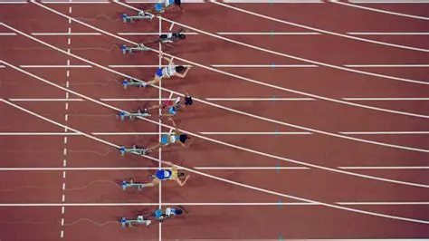

|
O Atletismo é um conjunto de modalidades desportivas compostas por corrida, saltos e arremessos. As provas normalmente são realizadas em estádios fechados. Nestes estádios, existem as demarcações para cada prova e os equipamentos. Algumas modalidades como a maratona, são realizadas em vias públicas. O Atletismo muitas vezes é apresentado nos Jogos Olímpicos, sendo várias das modalidades utilizadas nas competições. |
 |